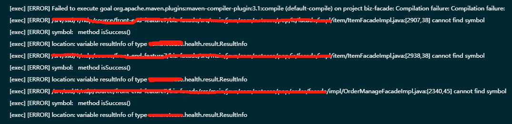

我在开发过程中，碰到了这样奇葩的问题，有一个类ResultInfo，出现在了3个不同的jar中，而且路径也是完全相同的，这三个jar都为工程所必须，这个问题导致maven编译失败，提示如下图所示：

事实上，3个jar包中，其中一个jar包的ResultInfo不包含方法isSuccess，而另外的是包含的，碰巧的就是maven在编译过程中，使用了这个不包含方法isSuccess的jar包，因此导致了编译错误。
网上搜索了一些资料后，大致找到了产生错误的原因：java会根据classpath设置的属性，进行类加载， 如果同名同路径的类，前面的优先加载，一旦前面的被加载，后面的就在也不会被加载。因为我使用Maven进行打包，所以我需要找到方法，来控制maven加载依赖jar的顺序。
后来在网上看到一篇文章，解释maven的依赖加载顺序，按照文章的说法，maven自2.9(也可能是2.0.9)开始，对于dependency中groupId和artifactId相同，但是version不同的jar包，加载顺序(假定为compile依赖 )如下：
依赖路径浅的优先：
假设，A->B->slf4j:1.6.2，A->C->E->slf4j:1.4.1，则slf4j:1.6.2优先
声明优先，如果在
dependencyManagement中声明的话会优先采用对应插件覆写优先，子POM内声明的优先于父POM中的依赖
参考上述的说法，虽然不完全一致(我的场景是完全不同的jar包)，我尝试将不包含方法isSuccess的jar包，放到的dependencies的最后，然后再重新调用maven编译，结果编译通过。